Nace UNICORCON PERÚ
Se constituye como Unión Corporativa Concretera-Perú E.I.R.L. con el propósito de impulsar el desarrollo constructivo del país.
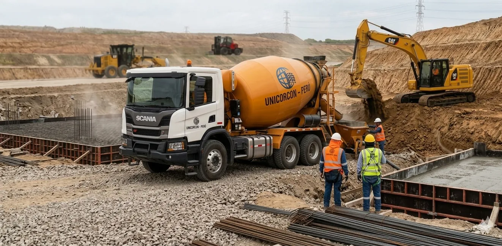
Concreto premezclado, maquinaria pesada, agregados y soluciones para obras civiles, movimiento de tierras y vías urbanas.
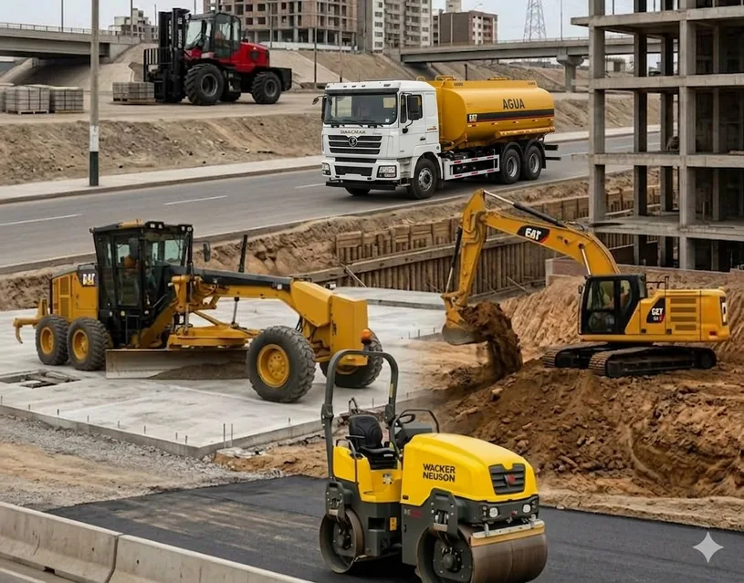
Somos Unión Corporativa Concretera-Perú E.I.R.L., una empresa joven que nace en 2025, enfocada en impulsar el desarrollo constructivo del país.
Integramos en un solo lugar la fabricación de productos de concreto de alta resistencia, el desarrollo de infraestructura de servicios públicos y soluciones flexibles de alquiler de maquinaria pesada.
Nos distinguimos por la calidad técnica de nuestros materiales y nuestro firme compromiso con el éxito de cada contratista y cliente.
Desde 2025, UNICORCON PERÚ orienta sus capacidades hacia obras sostenibles, seguras y técnicamente exigentes.
Se constituye como Unión Corporativa Concretera-Perú E.I.R.L. con el propósito de impulsar el desarrollo constructivo del país.
La propuesta reúne concreto premezclado, agregados, maquinaria pesada, movimiento de tierras, obras civiles y pavimentación.
Suministrar soluciones de concreto premezclado, servicios de maquinaria pesada y material granular que superen las expectativas de nuestros clientes en calidad, eficiencia y rentabilidad.
Consolidarnos como el principal aliado estratégico de la construcción a nivel nacional, expandiendo nuestra capacidad de producción y cobertura logística.
El brochure corporativo 2026 presenta cuatro certificaciones ISO como parte del respaldo de gestión de UNICORCON PERÚ.
Un marco de gestión orientado a calidad, anticorrupción, ambiente y seguridad y salud.
Dosificación automatizada para concreto homogéneo y durable.
Capacidad para abastecer material granular a las obras que lo requieren.
Concreto, agregados, maquinaria y ejecución de obras en una sola propuesta.
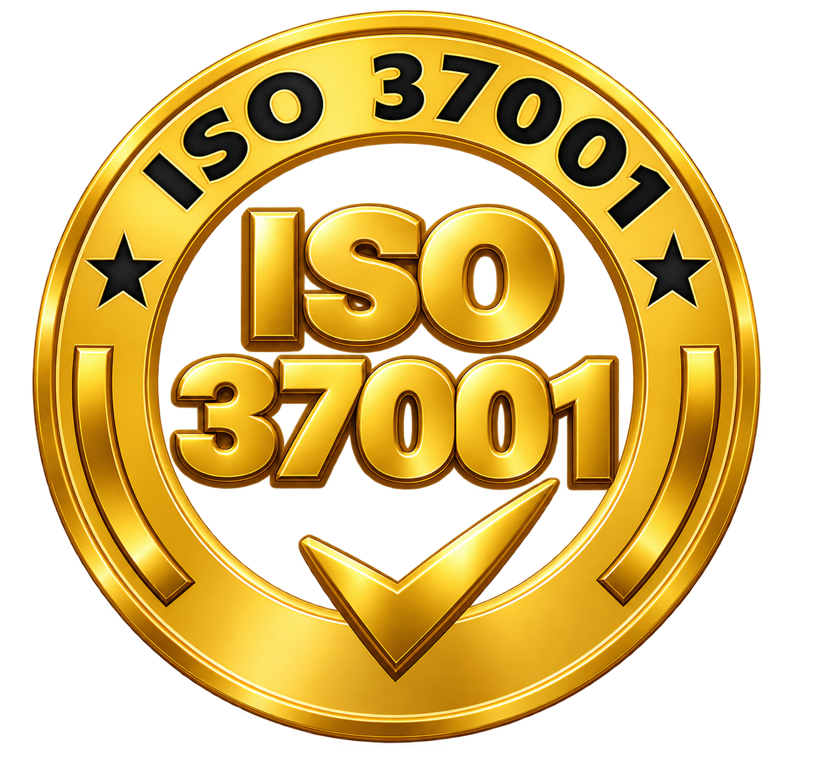
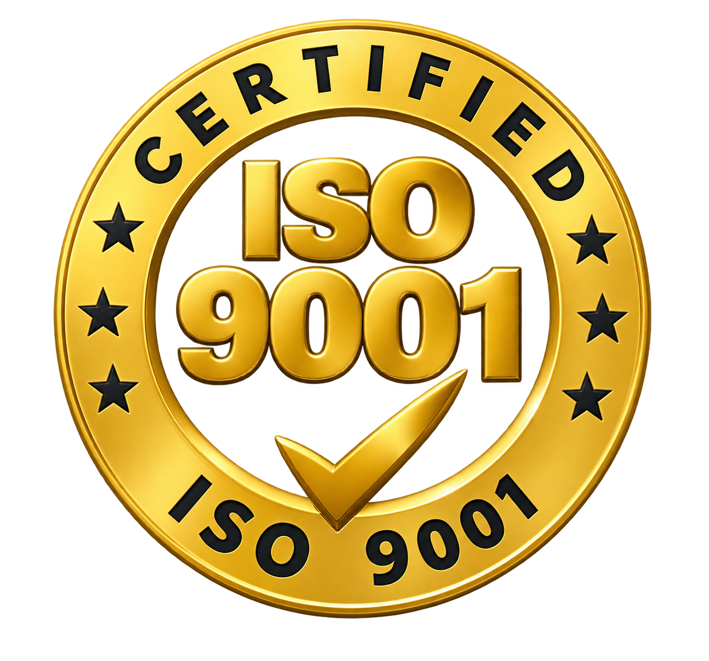
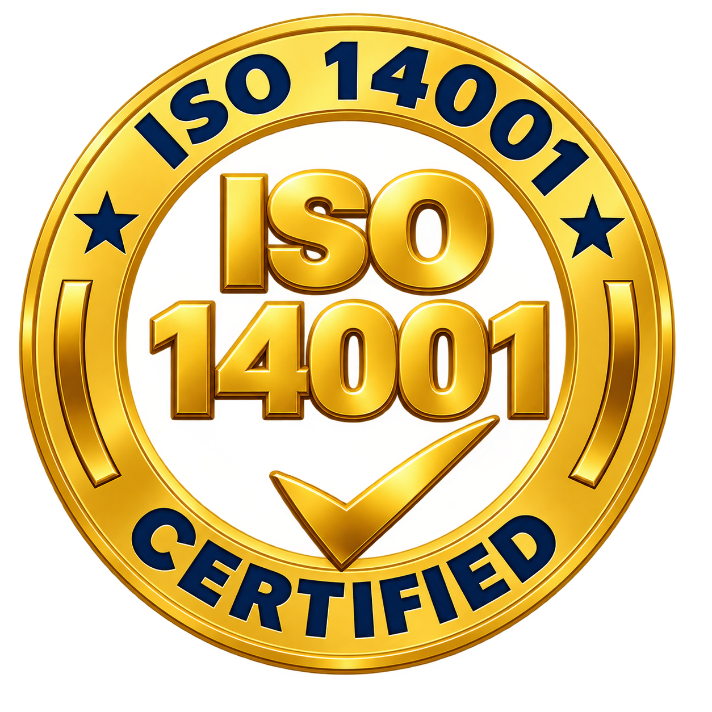
Una oferta pensada para contratistas, proyectos de infraestructura y construcción.
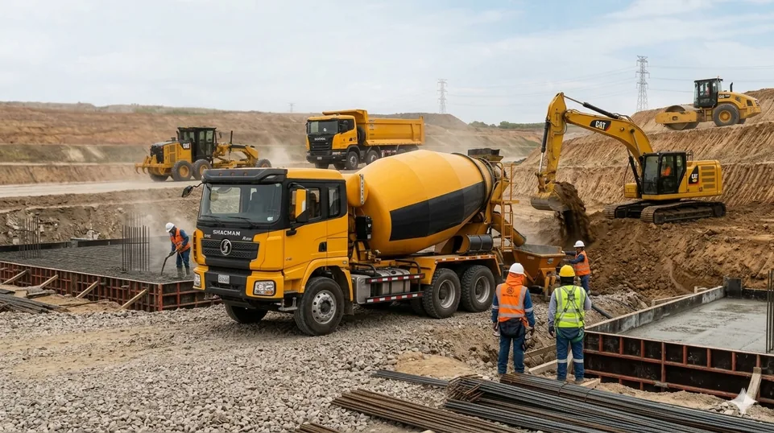
Plantas dosificadoras automatizadas y moderna flota de mixers para entregar concreto homogéneo y durable.

Excavación, nivelación, compactación y soporte logístico en obra con equipos operados por profesionales certificados.
Solicitar equipo →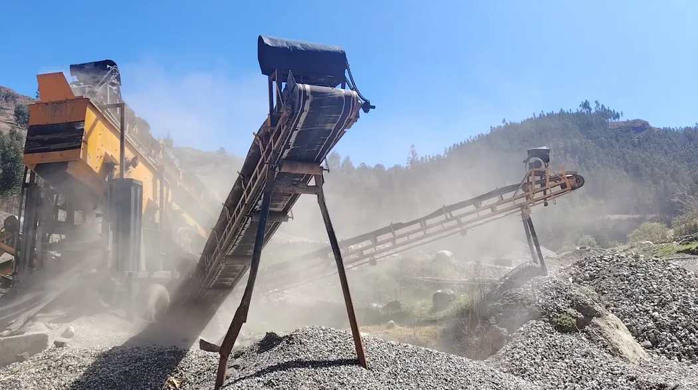
Producción, trituración, clasificación y tamizado para suministro constante de agregados de calidad.
Consultar agregados →Capacidades descritas en nuestro catálogo corporativo para acompañar distintas etapas de la obra.
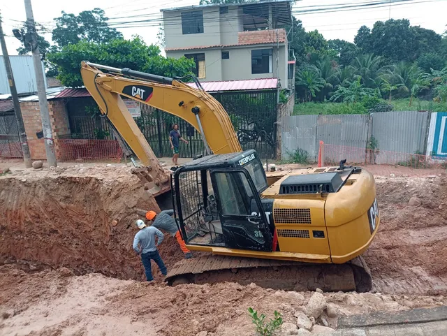
Preparación de terrenos, excavaciones masivas, apertura de vías y conformación de terraplenes con tractores de oruga, excavadoras y cargadores.
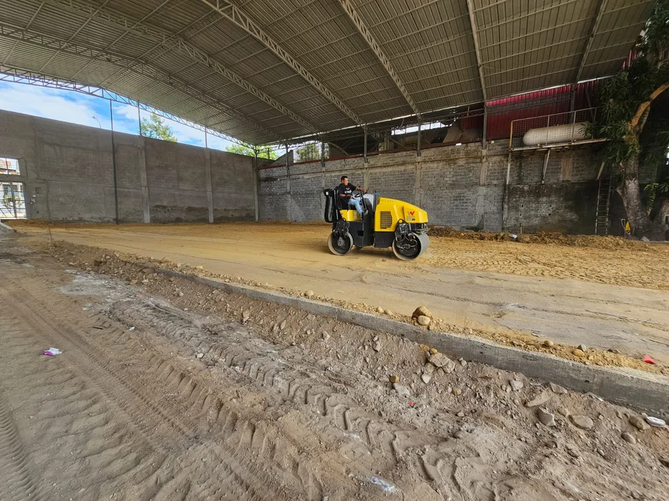
Preparación y nivelación de suelos hasta plataformas industriales, con equipos de compactación modernos y personal calificado.
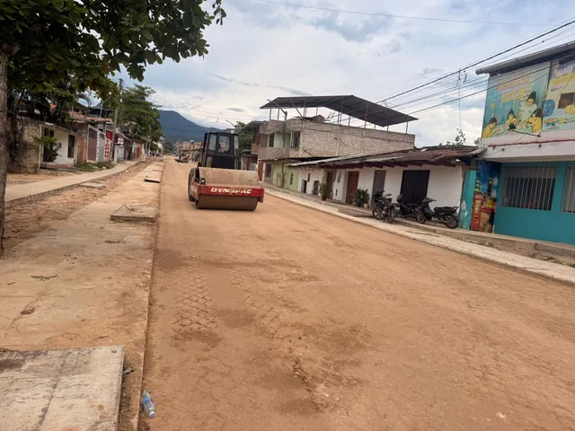
Nivelación y preparación de subrasante hasta carpetas asfálticas o concreto hidráulico, buscando resistencia, durabilidad y tránsito seguro.
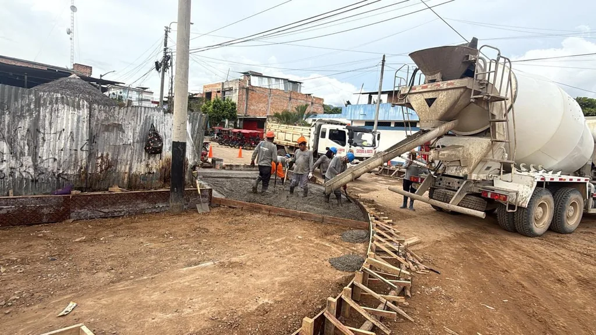
Suministro y colocación de concreto premezclado para veredas, pavimentos urbanos, losas y cimentaciones, con dosificación automatizada.
Integramos suministro, equipos y ejecución para ayudarte a mantener el proyecto en movimiento.
Materiales y procesos orientados al cumplimiento de especificaciones de diseño.
Dosificación automatizada y soluciones de maquinaria para optimizar el trabajo en campo.
Una gestión respaldada por ISO 45001:2018 y equipos operados por personal calificado.
Enfoque en durabilidad, puntualidad y rentabilidad para contratistas y clientes.
Cuéntanos qué necesitas y coordinemos una cotización para tu obra.
Escribir por WhatsApp ↗